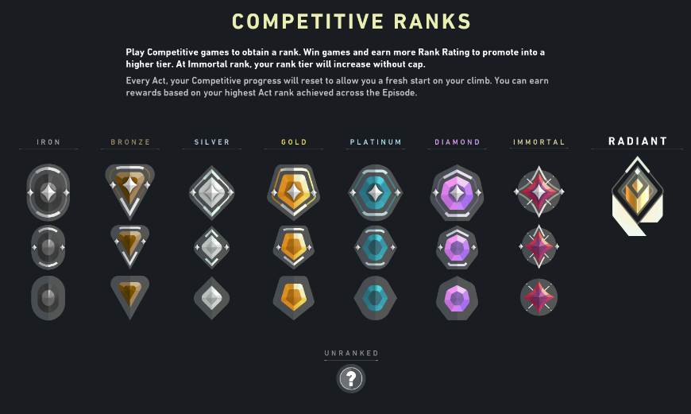
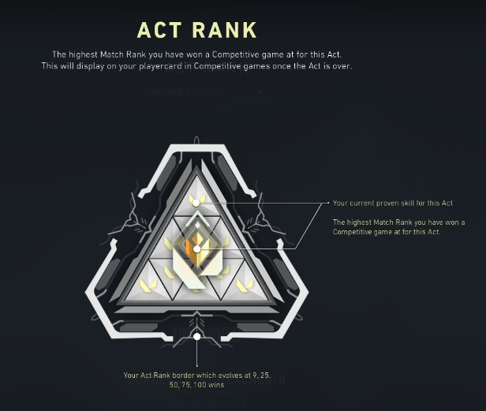

I Valorant finnes det ulike måter man kan spille på, eller spillmodus. Man kan velge dem i hovedmenyen.
Dette er en spillmodus uten rangering, altså du får tilfeldige motstandere. Likevel finnes det et skjult rangeringssystem i denne spillmodusen, men den kan man ikke se og den påvirker ikke din status i spillet. Her finnes det ikke overtid. Det betyr at hvis stillingen er 12-12, så vinner laget som vinner neste runde. Dette betyr at det kan maksimalt være 25 runder i spillmodusen "uten rangering". På grunn av dette kan det være bare to resultater i denne spillmodusen (seier og tap).
Dette er en spillmodus som i utgangspunktet ble laget for å spille en rask kamp. Her finnes det også ikke et rangeringssystem. Her er det flere sfærer på ulike steder, og de har ulike effekter (for eksempel lage falske lyder hos motstandere, få vite posisjonen til 2 motstandere eller oppgradere våpenet). Den ultimative egenskapen blir tilgjengelig raskere enn i vanlige spillmodus. Her kna du ikke kjøpe våpen. Alle spiller med samme våpen. Her er det umulig å gi opp, og det kan maksimalt være 4 runder. Første mann til 4 runder vinner. Hver halve del av kampen er delt i 3 runder (unntatt den siste runden som er overtid), altså pistolrunde, force og "buy"-runde.
Deathmatch oversettes som dødskamp. Målet med denne spillmodusen er å bli den første som får 40 drap, eller å bli den som har mest drap etter 8 minutter. Vanligvis blir en deathmatch ferdig etter 6-8 minutter. Her kan du kjøpe hvilket som helst våpen. Du kan ikke bruke egenskapene dine. Du blir gjenopplivet i et tilfeldig sted etter at du har dødd. Denne spillmodusen er den eneste hvor det er mulig å gå ut av spillet eller kampen uten at du blir straffet med en 5 minutters blokkering av tilgangen til å finne en kamp.
Denne spillmodusen er den som de fleste spiller. Her må du spille 5 kamper for å få din "rank". Det er mulig å få hvilken som helst "rank" opptil diamant 1, hvis du er urangert og fikk en "rank" etter 5 kamper.
En "rank" representerer ditt nivå i spillet. Hvis du taper eller vinner, får du eller mister du fra 5-50 poeng. Det avhenger mest av hvor bra du spilte og hvor stor prosentdel av alle kampene dine er seiere. Det er fortsatt ingen som har fått mer enn 46 poeng for å vinne en kamp. Hvis du spiller stabilt på et nivå, så får du vanligvis fra 15-20 poeng for å vinne en kamp, og du mister fra 10-15 poeng hvis du taper. Du kan vinne eller tape litt mer poeng hvis du har spilt veldig bra/dårlig i kampen. Hver "rank" tilsvarer 100 poeng.
Etter at sesongen har blitt ferdig, får en "act rank". Her blir alle dine seiere notert med en trekant med ikonet av "ranken" som du vant på. Dette er en oversikt som viser din utvikling i "rank" gjennom 2-3 måneder. Etter at episoden blir ferdig (en episode er 3 sesonger), så får du en brikke med den høyeste "ranken" som du har vært på gjennom hele episoden. Du får 2 stykker og du kan henge dem på våpnene dine i hovedmenyen.
Når du når "Immortal 1"-ranken, så regnes du som en spiller som er innenfor litt mindre enn 0,1% beste spillerne i spillet. Derfor får du vite hvilken plass/posisjon du er på i din region. Som region regnes for eksempel Europa, Nordamerika eller Asia. I Europa er det vanligvis omtrent 40000 spillere som har "immortal" ranken. Radiant-ranken er den eneste som har bare en variasjon av ranken, og hvis du er radiant, så betyr det at du har vært innenfor de 500 beste spillerne i regionen din.
Det finnes også andre spillmodus som befinner seg i spillet bare en måned. Slike spillmodus er for eksempel "snøballkrig". Det finnes mer informasjon om slike spillmodus i spillet. Her skriver jeg ikke om dem fordi disse spillmodusene befinner seg ikke i spillet hele tiden.
Spillmodus
Uten rangering
Spikerush
Deathmatch
Med rangering
Andre spillmodus

